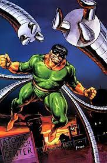

| #6310-53: OCTAVIOUS, OTTO | ALIASES; DOCTOR OCTOPUS, THE MASTER PLANNER | THREAT LEVEL: 9.7 |
| SPECIES: HUMAN HEIGHT: 5' 11" WEIGHT: 378 LBS D.O.B: 8/8/58 HAIR COLOR: BROWN GENDER: M CONTAINMENT LOCATION: THE RAFT CONTAINMENT STATUS: ESCAPED BLOOD TYPE: B- |
 | |
| POWERS/ ABILITIES SUPERHUMAN STRENGTH SUPERHUMAN INTELLECT |
BIO; OTTO OCTAVIOUS WAS THE GENIUS SON OF AN ABSUIVE FATHER AND CODDLING MOTHER. AFTER HIS FATHER DIED IN A CONSTRUCTION ACCIDENT OTTO HAD TO TAKE OVER AS MAN OF THE HOUSE. HIS MOTHER DEVELOPED A CODEPENDANT RELATIONSHIP OF ALWSY RELYING ON HER SON WITH EMOTIONAL SUPPORT. WEHN OTTO BEGA TO WORK AT A SCEINCE LAB AS AN ADULT HE DEVELOPED HIS MECHANICAL ARMS TO WORK WITH VOLITLE SUBSTANCES AT A SAFE DISNTANCE AND BEGAN A RELATIONSHIP WITH HIS CO WORKER. OTTO EVENTUALLY PROPOSED. WHEN OTTO INFOMRED HIS MOTHER OF THIS SHE HAD A MELTDOWN AS SHE FEARED THE CO WOKRER WASNT GOOD ENOUGH FOR HER SON AND FEARED SHED END UP ALONE. THIS REACTION BORKE OTTO AND BROKE OFF THE ENGAGEMNT. OTTO RETURNED TO HIS MOTHER'S HOUSE TO INFORM HER OF THE BREAK UP HE FOUND HER PRPAIRING FOR A DATE. FURIOUS AT THIS DOUBLE STANDARD HE BEGAN TO SCREAM AT AND BRUATE HIS POOR MOTHER. THIS RUSH OF EMOTION CAUSED HIS MOTHER TO DIE OF A HEART ATTACK. WITH HIS HEART BROKEN AND MORUNING THE LOSS OF HIS ONLY REMAINING FAMILY, OTTO GREW CARLESS IN THE LAB. THIS RESULTED IN AN EXPLOSION WHICH FUSED HIS MECHANICAL ARMS TO HIS BODY.
CONTAINMENT REQUIREMENTS: UPON BEING TAKEN INTO CUTADY A LEVEL 5 EMP IS TO BE ATTACHED TO THE HARNESS ON HIS TORSO. THIS WILL BLOCK THE ARM'S ABILITY TO FUNCTION. OCTAVIOUS IS TO A VIRBAINIUM LINED CELL. OUR MEDICAL DEPARTMENT IS SEARCHING FOR A WAY TO SAFLEY REMOVEE HIS EXTRA ARMS. IT IS DIFFICULT TO REMOVE AS THE ARMS ARE FUSED NOT JUST TO HIS SKIN, BUT HIS SPINE, SPINALCORD, BRAINSTEM, AND SEVERAL MAJOR ARTERIES. EVERY PLANNED REMOVAL WOULD RESULT IN LOSS OF SIGHT, PARALEGIA,QUADRAPLEGIA,BRAIN DAMAGE OR DEATH. | prev next |